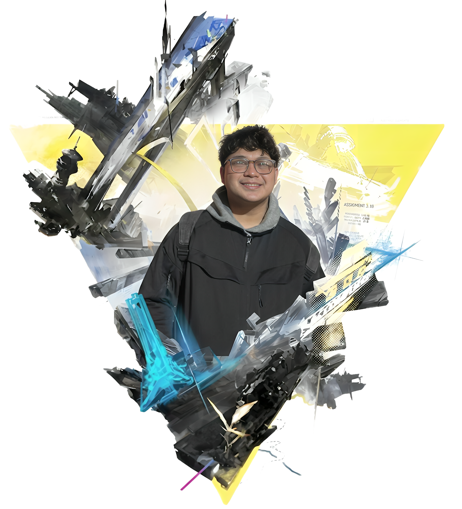

01 / PORTFOLIO / 2026 // FIELD.JAY
Christian Jay Sese
Full-Stack Developer & IT Specialist
Highly adaptable IT graduate with hands-on experience in full-stack development, AI/Machine Learning (PyTorch), and enterprise IT support.

02 / PROFILE // ARCHIVE.02
About Me
"Highly adaptable IT graduate with hands-on experience in full-stack software development, AI/Machine Learning (PyTorch), and enterprise IT infrastructure support."
Hello! I'm Christian Jay Sese, an Information Technology graduate from Quezon City University with a strong focus on software engineering, database management, and full-stack architecture.
During my internship at DENSO TEN Solutions Philippines Corporation, I provided first and second-line technical support, engineered automated ticket reassignment workflows using Power Apps and Power Automate, and performed remote diagnostics across enterprise subnets.
Beyond corporate experience, I lead end-to-end development projects. Whether I'm architecting a campus asset tracking system with predictive analytics, containerizing applications with Docker and Oracle Database, or building machine learning pipelines with PyTorch to classify brain MRI images, I thrive on bridging the gap between robust backend systems and intuitive user experiences.
03 / PROJECTS // ARCHIVE.03
[ Technical Arsenal ] System Capabilities
05 / COMMUNICATION // ARCHIVE.05
"Christian Jay Sese Portfolio" is a personal project developed for professional showcase purposes.
All trademarks, logos, and brand names are the property of their respective owners. The use of any trade name or trademark is for identification and reference purposes only and does not imply any association with the trademark holder of their product brand.
This website is built using HTML5, CSS3, and vanilla JavaScript. No cookies, trackers, or personal data are collected during your visit.
© 2026 JAYFIELD / EDITORIAL REV. All Rights Reserved.